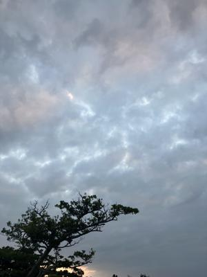
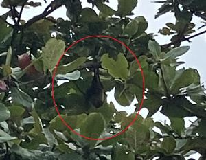

うるがいの話 ある日
最新: レット・イット・ビー【うるがいの話 ある日】とは 一日だけのプログです
『うるがいの話』の最新一日だけのプログで、通信料が少なく経済的だ。カニの画像をクリックすると全ての日付が載る『うるがいの話』サイトを表示します
|
|
【うるがいの話】 うるがい(ｳﾙｶﾞｲ urugai)とは、『もずくがに』の名前でとても大きくなります。 |
|---|---|
|
|
【カミマヤーの話】 猫のことを方言でマヤーといいます。カミマヤー（kamimayaa）とは、神の猫のことです。 |
|
【たながぁの音楽】 たながぁ（ﾀﾅｶﾞｰ tanagaa）とは手長えびのことで、何種類かあり大きいのは車 エビぐらいになります。 |

|
【ぶながぁの話】 ぶながぁ(ﾌﾞﾅｶﾞｰ bunagaa)とは、赤い髪の毛、赤い身体、そして身長は１ｍ２０ｃｍ ぐらい、川の蟹を食べているの目撃された。場所は沖縄県国頭郡大宜味村のと ある村僕の隣近所に住んでいる爺さんから、聞いた話です。 |
|
|
【ギーマの話】 ギーマ(giima)とは、山原の里山に咲くスズランに似た、 花を付けます。実は食べられます、 気が付くと口の周りが紫になっています。 |
2023年11月26日 (日）レット・イット・ビー
17:24
 
レット・イット・ビー（Ｌｅｔ Ｉｔ Ｂｅ）は、”あるがままに”という意
味らしい。とある楽譜ソフトのデータをダウンロードするサイトでビートルズ
で人気のあるダウンロード順位は、『イェスタディ」、『レット・イット・ビ
ー』と載っていた。フーンと楽譜を探し始めたのが１１月１３日、大元の楽譜
データとネットから４つの楽譜、そして自分で購入していた『ギター・ソロ
ビートルズの名曲あつめました。』から、三線向けの楽譜が完成したのが１１
月２０日、通常だとここで動画をアップするのだが、音質の良いダウンロード
したＴｕｘＧｕｉｔａｒの楽譜ソフトのオーディオと、工工四付与したＭｕｓ
ｅＳｃｏｒｅ３の楽譜ソフトの動画（ビデオ）をフィ―ジョンし、さらに英語
の歌詞が今一意味不明なので、はるか大昔に自分で購入していた『ビートルズ
全詩集 (単行本) 内田久美子訳』から訳を動画の字幕として編集スルベ。と思
ったのだが、動画編集ソフト（Ｐｒｅｍｉｅｒｅ Ｅｌｅｍｅｎｔｓ９）を使
ったのが、去年の１１月・・・、一年経つと忘れてしまうのである。本を復習
し始め、映像と演奏の音の同期をとるのに四苦八苦し、字幕を入れるのにまた
また四苦八苦、やっと完成したのが今日の午前中。暇人だから、出来るのであ
る。動画の時間が長いが。写真２は、ジョギングの準備をしているとコウモリ
が飛んできて、近くの木に止まったので撮った写真。
『ビートルズ レット・イット・ビー(Let It Be) 三線』４分１３秒
１７時１５分 ビットコインの総資産 ￥１１、３６２（↓６６）